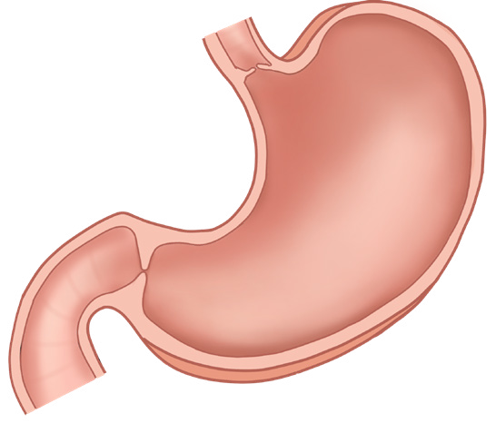

43
Student’s Book - Form Two

Biology for Secondary Schools
the food from flowing back into the
oesophagus.
Digestion in the stomach
The stomach has elastic muscular walls that can stretch to accommodate about two litres of food and drinks.
The food is stored temporarily in the stomach before further digestion.
That is why people do not need to eat food constantly. Figure 2.5 shows the structure of a human stomach.

Cardiac sphincter
Pyloric sphincter
Stomach
Figure 2.5: Structure of a human stomach
The walls of the stomach have gastric glands that secrete gastric juice, a chemical substance which contains hydrochloric acid and enzymes. The contraction and relaxation of the muscles of the stomach wall causes a mechanical breakdown of the food into smaller particles. This process is called churning. The process supplements the mechanical breakdown of food that occurred in the mouth through chewing by the teeth. Churning allows food to mix well with the gastric juice.
The stomach walls consist of circular and
longitudinal
muscles.
These
muscles contract and relax causing movement and thorough mixing of food with the gastric juice, which form a creamy semi-liquid substance called chyme. Thus, food is converted into a digestible form or chyme in the stomach. The gastric juice contains the following substances:
Hydrochloric acid (HCl)
This provides an acidic medium in the stomach for enzymes to work properly, kills disease-causing germs and converts pepsinogen into pepsin.
The acidic environment facilitate the absorption of certain nutrients such as iron and calcium(minerals) and vitamin
B12
Pepsinogen
This is an inactive form of pepsin enzyme. This form cannot attack the walls of the stomach which are protein in nature.
Pepsin
This is an active form of pepsinogen. It is an enzyme responsible for breaking down proteins into smaller molecules called peptides and amino acids.
Rennin
This is an enzyme that coagulates milk.
This allows milk proteins to stay in the stomach long enough to be broken down into peptides.
08/04/2026 10:18:14